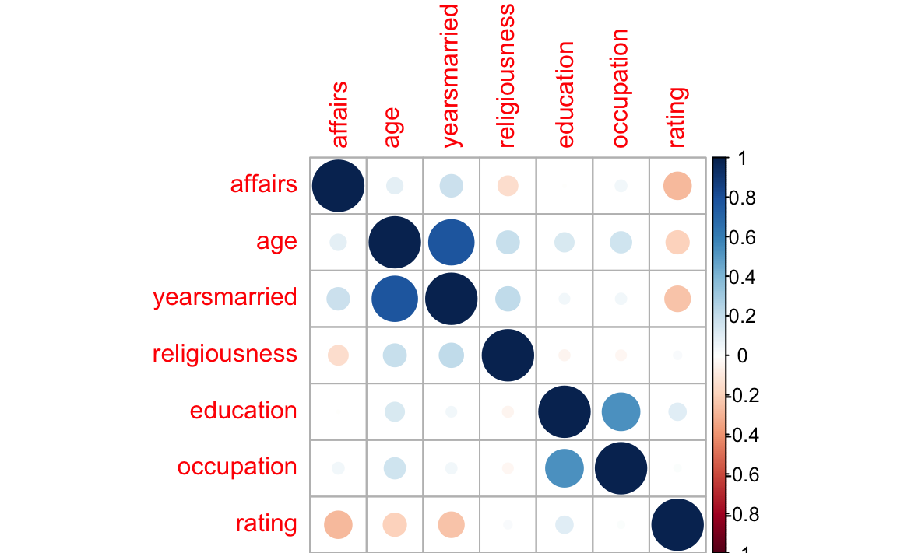

Kapitel 13 Fallstudien zum geleiteten Modellieren
In diesem Kapitel werden folgende Pakete benötigt.
library(tidyverse) # Datenjudo
library(psych) # Befehl 'describe'
library(broom) # lm-Ergebnisse aufpolieren
library(corrplot) # Korrelationstabellen visualisieren
library(titanic) # Für Datensatz 'titanic'
library(compute.es) # Effektstärken berechnen13.1 Überleben auf der Titanic
In dieser YACSDA63 geht es um die beispielhafte Analyse nominaler Daten anhand des “klassischen” Falls zum Untergang der Titanic. Eine Frage, die sich hier aufdrängt, lautet: Kann (konnte) man sich vom Tod freikaufen, etwas polemisch formuliert. Oder neutraler: Hängt die Überlebensquote von der Klasse, in der der Passagiers reist, ab?
13.1.1 Daten laden
Mit dem Befehl data kann man Daten aus Paketen laden; lässt man den Paramter package weg, so werden alle geladenen Pakete nach diesem Datensatz durchsucht. Benennt man den Parameter, so kann man auch nicht geladene Pakete damit ansteuern.
data(titanic_train, package = "titanic")
titanic_train <- na.omit(titanic_train)13.1.2 Erster Blick
Werfen Sie einen ersten Blick in die Daten mit glimpse(titanic_train). Lassen Sie sich dann einige deskriptive Statistiken ausgeben64
13.1.3 Welche Variablen sind interessant?
Von 12 Variablen des Datensatzes interessieren uns offenbar Pclass und Survived; Hilfe zum Datensatz kann man übrigens mit help(titanic_train) bekommen. Diese beiden Variablen sind kategorial (nicht-metrisch), wobei sie in der Tabelle mit Zahlen kodiert sind. Natürlich ändert die Art der Codierung (hier als Zahl) nichts am eigentlichen Skalenniveau. Genauso könnte man “Mann” mit 1 und “Frau” mit 2 kodieren; ein Mittelwert bliebe genauso (wenig) aussagekräftig. Zu beachten ist hier nur, dass sich manche R-Befehle verunsichern lassen, wenn nominale Variablen mit Zahlen kodiert sind. Daher ist es oft besser, nominale Variablen mit Text-Werten zu benennen (wie “survived” vs. “drowned” etc.). Wir kommen später auf diesen Punkt zurück.
13.1.4 Univariate Häufigkeiten
Bevor wir uns in kompliziertere Fragestellungen stürzen, halten wir fest: Wir untersuchen zwei nominale Variablen. Sprich: wir werden Häufigkeiten auszählen. Häufigkeiten (und relative Häufigkeiten, also Anteile oder Quoten) sind das, was uns hier beschäftigt.
Zählen wir zuerst die univariaten Häufigkeiten aus: Wie viele Passagiere gab es pro Klasse? Wie viele Passagiere gab es pro Wert von Survived (also die überlebten bzw. nicht überlebten)?
c1 <- dplyr::count(titanic_train, Pclass)
c1
#> # A tibble: 3 x 2
#> Pclass n
#> <int> <int>
#> 1 1 186
#> 2 2 173
#> 3 3 355Achtung - Namenskollision! Sowohl im Paket mosaic als auch im Paket dplyr gibt es einen Befehl count. Für select gilt Ähnliches - und für eine Reihe anderer Befehle auch. Das arme R weiß nicht, welchen von beiden wir meinen und entscheidet sich im Zweifel für den falschen. Da hilft, zu sagen, aus welchem Paket wir den Befehl beziehen wollen. Das macht der Operator ::. Probieren Sie die Funktion find_funs aus Kapitel 2.1.4, um herauszufinden, welche Pakete z.B. den Befehl count beherbergen.
Aha. Zur besseren Anschaulichkeit können Sie das auch plotten (ein Diagramm dazu malen). Wie?65
Der Befehl qplot zeichnet automatisch Punkte, wenn auf beiden Achsen “Zahlen-Variablen” stehen (also Variablen, die keinen “Text”, sondern nur Zahlen beinhalten. In R sind das Variablen vom Typ int (integer), also Ganze Zahlen oder vom Typ num (numeric), also reelle Zahlen).
c2 <- dplyr::count(titanic_train, Survived)
c2
#> # A tibble: 2 x 2
#> Survived n
#> <int> <int>
#> 1 0 424
#> 2 1 290Man beachte, dass der Befehl count stehts eine Tabelle (data.frame bzw. tibble) verlangt und zurückliefert.
13.1.5 Bivariate Häufigkeiten
OK, gut. Jetzt wissen wir die Häufigkeiten pro Wert von Survived (dasselbe gilt für Pclass). Eigentlich interessiert uns aber die Frage, ob sich die relativen Häufigkeiten der Stufen von Pclass innerhalb der Stufen von Survived unterscheiden. Einfacher gesagt: Ist der Anteil der Überlebenden in der 1. Klasse größer als in der 3. Klasse?
Zählen wir zuerst die Häufigkeiten für alle Kombinationen von Survived und Pclass:
c3 <- dplyr::count(titanic_train, Survived, Pclass)
c3
#> # A tibble: 6 x 3
#> Survived Pclass n
#> <int> <int> <int>
#> 1 0 1 64
#> 2 0 2 90
#> 3 0 3 270
#> 4 1 1 122
#> 5 1 2 83
#> 6 1 3 85Da Pclass 3 Stufen hat (1., 2. und 3. Klasse) und innerhalb jeder dieser 3 Klassen es die Gruppe der Überlebenden und der Nicht-Überlebenden gibt, haben wir insgesamt 3*2=6 Gruppen.
Es ist hilfreich, sich diese Häufigkeiten wiederum zu plotten; probieren Sie qplot(x = Pclass, y = n, data = c3).
Hm, nicht so hilfreich. Schöner wäre, wenn wir (farblich) erkennen könnten, welcher Punkt für “Überlebt” und welcher Punkt für “Nicht-Überlebt” steht. Mit qplot geht das recht einfach: Wir sagen der Funktion qplot, dass die Farbe (color) der Punkte den Stufen von Survived zugeordnet werden sollen: qplot(x = Pclass, y = n, color = Survived, data = c3).
Viel besser. Was noch stört, ist, dass Survived als metrische Variable verstanden wird. Das Farbschema lässt Nuancen, feine Farbschattierungen, zu. Für nominale Variablen macht das keinen Sinn; es gibt da keine Zwischentöne. Tot ist tot, lebendig ist lebendig. Wir sollten daher der Funktion sagen, dass es sich um nominale Variablen handelt (s. Abbildung 13.1).
qplot(x = factor(Pclass), y = n, color = factor(Survived), data = c3)Abbildung 13.1: Überlebensraten auf der Titanic, in Abhängigkeit von der Passagierklasse
Viel besser. Jetzt fügen Sie noch noch ein bisschen Schnickschnack hinzu:
qplot(x = factor(Pclass), y = n, color = factor(Survived), data = c3) +
labs(x = "Klasse",
title = "Überleben auf der Titanic",
colour = "Überlebt?")13.1.6 Signifikanztest
Manche Leute mögen Signifikanztests. Ich persönlich stehe ihnen kritisch gegenüber, da ein p-Wert eine Funktion der Stichprobengröße ist und außerdem zumeist missverstanden wird (und er gibt nicht die Wahrscheinlichkeit der getesteten Hypothese an, was die Frage aufwirft, warum er mich dann interessieren sollte). Aber seisdrum, berechnen wir mal einen p-Wert. Es gibt mehrere statistische Tests, die sich hier potenziell anböten und unterschiedliche Ergebnisse liefern können (Briggs 2008a) (was die Frage nach der Objektivität von statistischen Tests in ein ungünstiges Licht rückt). Nehmen wir den \(\chi^2\)-Test.
chisq.test(titanic_train$Survived, titanic_train$Pclass)
#>
#> Pearson's Chi-squared test
#>
#> data: titanic_train$Survived and titanic_train$Pclass
#> X-squared = 90, df = 2, p-value <2e-16Der p-Wert ist kleiner als 5%, daher entscheiden wir uns, entsprechend der üblichen Gepflogenheit, gegen die H0 und für die H1: “Es gibt einen Zusammenhang von Überlebensrate und Passagierklasse”.
13.1.7 Effektstärke
Abgesehen von der Signifikanz, und interessanter, ist die Frage, wie sehr die Variablen zusammenhängen. Für Häufigkeitsanalysen mit 2*2-Feldern bietet sich das “Odds Ratio” (OR), das Chancenverhältnis an. Das Chancen-Verhältnis beantwortet die Frage: “Um welchen Faktor ist die Überlebenschance in der einen Klasse größer als in der anderen Klasse?”. Eine interessante Frage, als schauen wir es uns an.
Das OR ist nur definiert für 2*2-Häufigkeitstabellen, daher müssen wir die Anzahl der Passagierklassen von 3 auf 2 verringern. Nehmen wir nur 1. und 3. Klasse, um den vermuteten Effekt deutlich herauszuschälen:
t2 <- filter(titanic_train, Pclass != 2) # "!=" heißt "nicht"Alternativ (synonym) könnten wir auch schreiben:
t2 <- filter(titanic_train, Pclass == 1 | Pclass == 3) # "|" heißt "oder"Und dann zählen wir wieder die Häufigkeiten aus pro Gruppe:
c4 <- dplyr::count(t2, Pclass)
c4
#> # A tibble: 2 x 2
#> Pclass n
#> <int> <int>
#> 1 1 186
#> 2 3 355Schauen wir nochmal den p-Wert an, da wir jetzt ja mit einer veränderten Datentabelle operieren:
chisq.test(t2$Survived, t2$Pclass)
#>
#> Pearson's Chi-squared test with Yates' continuity correction
#>
#> data: t2$Survived and t2$Pclass
#> X-squared = 90, df = 1, p-value <2e-16Ein \(\chi^2\)-Wert von ~96 bei einem n von 707.
Dann berechnen wir die Effektstärke (OR) mit dem Paket compute.es (muss ebenfalls installiert sein)
compute.es::chies(chi.sq = 96, n = 707) Das OR beträgt also etwa 4.21. Die Chance zu überleben ist also in der 1. Klasse mehr als 4 mal so hoch wie in der 3. Klasse. Es scheint: Money buys you life…
13.1.8 Logististische Regression
Berechnen wir noch das Odds Ratio mit Hilfe der logistischen Regression. Zum Einstieg: Ignorieren Sie die folgende Syntax und schauen Sie sich das Diagramm an. Hier sehen wir die (geschätzten) Überlebens-Wahrscheinlichkeiten für Passagiere der 1. Klasse vs. Passagiere der 2. vs. der 3. Klasse.
glm1 <- glm(data = titanic_train,
formula = Survived ~ Pclass,
family = "binomial")
exp(coef(glm1))
#> (Intercept) Pclass
#> 5.056 0.402
titanic_train$pred_prob <- predict(glm1, type = "response")
Abbildung 13.2: Logistische Regression zur Überlebensrate nach Passagierklasse
Wir sehen, dass die Überlebens-Wahrscheinlichkeit in der 1. Klasse höher ist als in der 3. Klasse. Optisch grob geschätzt, ~60% in der 1. Klasse und ~25% in der 3. Klasse.
Schauen wir uns die logistische Regression an: Zuerst haben wir den Datensatz auf die Zeilen beschränkt, in denen Personen aus der 1. und 3. Klasse vermerkt sind (zwecks Vergleichbarkeit zu oben). Dann haben wir mit glm und family = "binomial" eine logistische Regression angefordert. Man beachte, dass der Befehl sehr ähnlich zur normalen Regression (lm(...)) ist.
Da die Koeffizienten in der Logit-Form zurückgegeben werden, haben wir sie mit der Exponential-Funktion in die “normale” Odds-Form gebracht (delogarithmiert, boa) mithilfe von exp(coef). Wir sehen, dass sich die Überlebens-Chance (Odds; nicht Wahrscheinlichkeit) um den Faktor .4 verringert pro zusätzlicher Stufe der Passagierklase. Würde jemand in der “nullten” Klasse fahren, wäre seine Überlebenschance ca. 5:1 (5/6, gut 80%). Die Überlebenschance sind der 1. Klasse sind demnach etwa: 5* 0.4, also 2:1, etwa 67%.
Komfortabler können wir uns die Überlebens-Wahrscheinlichkeiten mit der Funktion predict ausgeben lassen.
predict(glm1, newdata = data.frame(Pclass = 1), type = "response")
#> 1
#> 0.67
predict(glm1, newdata = data.frame(Pclass = 2), type = "response")
#> 1
#> 0.449
predict(glm1, newdata = data.frame(Pclass = 3), type = "response")
#> 1
#> 0.247Alternativ kann man die tatsächlichen (beobachteten) Häufigkeiten auch noch “per Hand” bestimmen:
titanic_train %>%
filter(Pclass %in% c(1,3)) %>%
dplyr::select(Survived, Pclass) %>%
group_by(Pclass, Survived) %>%
summarise(n = n() ) %>%
mutate(Anteil = n / sum(n))
#> # A tibble: 4 x 4
#> # Groups: Pclass [2]
#> Pclass Survived n Anteil
#> <int> <int> <int> <dbl>
#> 1 1 0 64 0.344
#> 2 1 1 122 0.656
#> 3 3 0 270 0.761
#> 4 3 1 85 0.239Übersetzen wir dies Syntax auf Deutsch:
Nehme den Datensatz “titanic_train” UND DANN
Filtere nur die 1. und die 3. Klasse heraus UND DANN
wähle nur die Spalten “Survived” und “Pclass” UND DANN
gruppiere nach “Pclass” und “Survived” UND DANN
zähle die Häufigkeiten für jede dieser Gruppen aus UND DANN
berechne den Anteil an Überlebenden bzw. Nicht-Überlebenden
für jede der beiden Passagierklassen. FERTIG.
13.1.9 Effektstärken visualieren
Zum Abschluss schauen wir uns die Stärke des Zusammenhangs noch einmal graphisch an. Wir berechnen dafür die relativen Häufigkeiten pro Gruppe (im Datensatz ohne 2. Klasse, der Einfachheit halber).
c5 <- dplyr::count(t2, Pclass, Survived)
c5$prop <- c5$n / 707
c5
#> # A tibble: 4 x 4
#> Pclass Survived n prop
#> <int> <int> <int> <dbl>
#> 1 1 0 64 0.0905
#> 2 1 1 122 0.1726
#> 3 3 0 270 0.3819
#> 4 3 1 85 0.1202Genauer gesagt haben die Häufigkeiten pro Gruppe in Bezug auf die Gesamtzahl aller Passagiere berechnet; die vier Anteile addieren sich also zu 1 auf. Das visualisieren wir wieder, s. Abbildung 13.3.
qplot(x = factor(Pclass),
y = prop,
fill = factor(Survived),
data = c5,
geom = "col")Abbildung 13.3: Absolute Überlebenshäufigkeiten
Das geom = "col" heißt, dass als “geometrisches Objekt” dieses Mal keine Punkte, sondern Säulen (columns) verwendet werden sollen.
Ganz nett, aber die Häufigkeitsunterscheide von Survived zwischen den beiden Werten von Pclass stechen noch nicht so ins Auge. Wir sollten es anders darstellen. Hier kommt der Punkt, wo wir von qplot auf seinen großen Bruder, ggplot wechseln sollten. qplot ist in Wirklichkeit nur eine vereinfachte Form von ggplot; die Einfachheit wird mit geringeren Möglichkeiten bezahlt. Satteln wir zum Schluss dieser Fallstudie also um, s. Abbildung 13.4.
ggplot(data = c5) +
aes(x = factor(Pclass), y = n, fill = factor(Survived)) +
geom_col(position = "fill") +
labs(x = "Passagierklasse",
fill = "Überlebt?",
caption = "Nur Passagiere, keine Besatzung")Abbildung 13.4: Relative Überlebenshäufigkeiten
Jeden sehen wir die Häufigkeiten des Überlebens bedingt auf die Passagierklasse besser. Wir sehen auf den ersten Blick, dass sich die Überlebensraten deutlich unterscheiden: Im linken Balken überleben die meisten; im rechten Balken ertrinken die meisten. Mit labs haben wir noch die X-Achse (x), die Bezeichnung der Füllfarbe (fill) sowie die Legende des Diagramms beschrieben. Diese letzte Analyse zeigt schön die Kraft von (Daten-)Visualisierungen auf. Der zu untersuchende Effekt tritt hier am stärken zu Tage; außerdem ist die Analyse relativ einfach.
Eine alternative Darstellung zeigt Abbildung 13.5. Hier werden die vier “Fliesen” gleich groß dargestellt; die Fallzahl wird durch die Füllfarbe besorgt.
c5 %>%
ggplot +
aes(x = factor(Pclass), y = factor(Survived), fill = n) +
geom_tile()Abbildung 13.5: Überlebenshäufigkeiten anhand eines Fliesendiagramms dargestellt
13.1.10 Fazit
In der Datenanalyse (mit R) kommt man mit wenigen Befehlen schon sehr weit; dplyr und ggplot2 zählen (zu Recht) zu den am häufigsten verwendeten Paketen. Beide sind flexibel, konsistent und spielen gerne miteinander. Die besten Einblicke haben wir aus deskriptiver bzw. explorativer Analyse (Diagramme) gewonnen. Signifikanztests oder komplizierte Modelle waren nicht zentral. In vielen Studien/Projekten der Datenanalyse gilt ähnliches: Daten umformen und verstehen bzw. “veranschaulichen” sind zentrale Punkte, die häufig viel Zeit und Wissen fordern. Bei der Analyse von nominalskalierten sind Häufigkeitsauswertungen ideal.
13.2 Außereheliche Affären
Für diese Fallstudie benötigen wir folgende Pakete:
library(AER) # Datensatz 'Affairs'
library(psych) # Befehl 'describe'
library(tidyverse) # Datenjudo
library(broom) # Befehl 'tidy`'Wovon ist die Häufigkeit von Affären (Seitensprüngen) in Ehen abhängig? Diese Frage soll anhand des Datensatzes Affairs untersucht werden. Laden wir als erstes den Datensatz in R.
data(Affairs, package = "AER")Verschaffen Sie sich zum Einstieg einen Überblick über die Daten. … OK, scheint zu passen. Was jetzt?
13.2.1 Zentrale Statistiken
Geben Sie zentrale deskriptive Statistiken an für Affärenhäufigkeit und Ehezufriedenheit!
# nicht robust:
mean(Affairs$affairs, na.rm = T)
#> [1] 1.46
sd(Affairs$affairs, na.rm = T)
#> [1] 3.3
# robust:
median(Affairs$Affairs, na.rm = T)
#> NULL
IQR(Affairs$Affairs, na.rm = T)
#> [1] NAEs scheint, die meisten Leute haben keine Affären:
count(Affairs, affairs)
#> # A tibble: 6 x 2
#> affairs n
#> <dbl> <int>
#> 1 0 451
#> 2 1 34
#> 3 2 17
#> 4 3 19
#> 5 7 42
#> 6 12 38Man kann sich viele Statistiken mit dem Befehl describe aus psych ausgeben lassen, das ist etwas praktischer:
describe(Affairs$affairs)
#> vars n mean sd median trimmed mad min max range skew kurtosis se
#> X1 1 601 1.46 3.3 0 0.55 0 0 12 12 2.34 4.19 0.13
describe(Affairs$rating)
#> vars n mean sd median trimmed mad min max range skew kurtosis se
#> X1 1 601 3.93 1.1 4 4.07 1.48 1 5 4 -0.83 -0.22 0.04Dazu muss das Paket psych natürlich vorher installiert sein. Beachten Sie, dass man ein Paket nur einmal installieren muss , aber jedes Mal, wenn Sie R starten, auch starten muss (mit library; vgl. Kapitel 2).
13.2.2 Visualisieren
Visualisieren Sie zentrale Variablen!
Sicherlich sind Diagramme auch hilfreich. Dies geht wiederum mit dem R-Commander oder z.B. mit folgenden Befehlen:
qplot(x = affairs, data = Affairs)
qplot(x = rating, data = Affairs)

Die meisten Menschen (dieser Stichprobe) scheinen mit Ihrer Beziehung sehr zufrieden zu sein.
13.2.3 Wer ist zufriedener mit der Partnerschaft: Personen mit Kindern oder ohne?
Nehmen wir dazu mal ein paar dplyr-Befehle:
library(dplyr)
Affairs %>%
group_by(children) %>%
summarise(rating_children =
mean(rating, na.rm = T))
#> # A tibble: 2 x 2
#> children rating_children
#> <fctr> <dbl>
#> 1 no 4.27
#> 2 yes 3.80Ah! Kinder sind also ein Risikofaktor für eine Partnerschaft! Gut, dass wir das geklärt haben.
13.2.4 Vertiefung: Wie viele fehlende Werte gibt es?
Was machen wir am besten damit?
Diesen Befehl könnten wir für jede Spalte ausführen:
sum(is.na(Affairs$affairs))
#> [1] 0Oder lieber alle auf einmal:
Affairs %>%
summarise_all(funs(sum(is.na(.))))
#> affairs gender age yearsmarried children religiousness education
#> 1 0 0 0 0 0 0 0
#> occupation rating
#> 1 0 0Übrigens gibt es ein gutes Cheat Sheet für dplyr.
Ah, gut, keine fehlenden Werte. Das macht uns das Leben leichter.
13.2.5 Wer ist glücklicher: Männer oder Frauen?
Affairs %>%
group_by(gender) %>%
summarise(rating_gender = mean(rating))
#> # A tibble: 2 x 2
#> gender rating_gender
#> <fctr> <dbl>
#> 1 female 3.94
#> 2 male 3.92Praktisch kein Unterschied. Heißt das auch, es gibt keinen Unterschied in der Häufigkeit der Affären?
Affairs %>%
group_by(gender) %>%
summarise(affairs_gender = mean(affairs))
#> # A tibble: 2 x 2
#> gender affairs_gender
#> <fctr> <dbl>
#> 1 female 1.42
#> 2 male 1.50Scheint auch kein Unterschied zu sein…
Und zum Abschluss noch mal etwas genauer: Teilen wir mal nach Geschlecht und nach Kinderstatus auf, also in 4 Gruppen. Theoretisch dürfte es hier auch keine Unterschiede/Zusammenhänge geben. Zumindest fällt mir kein sinnvoller Grund ein; zumal die vorherige eindimensionale Analyse keine Unterschiede zu Tage gefördert hat.
Affairs %>%
group_by(gender, children) %>%
summarise(affairs_mean = mean(affairs),
rating_mean = mean(rating))
#> # A tibble: 4 x 4
#> # Groups: gender [?]
#> gender children affairs_mean rating_mean
#> <fctr> <fctr> <dbl> <dbl>
#> 1 female no 0.838 4.40
#> 2 female yes 1.685 3.73
#> 3 male no 1.014 4.10
#> 4 male yes 1.659 3.86
Affairs %>%
group_by(children, gender) %>%
summarise(affairs_mean = mean(affairs),
rating_mean = mean(rating))
#> # A tibble: 4 x 4
#> # Groups: children [?]
#> children gender affairs_mean rating_mean
#> <fctr> <fctr> <dbl> <dbl>
#> 1 no female 0.838 4.40
#> 2 no male 1.014 4.10
#> 3 yes female 1.685 3.73
#> 4 yes male 1.659 3.8613.2.6 Effektstärken
Berichten Sie eine relevante Effektstärke!
Hm, auch keine gewaltigen Unterschiede. Höchstens für die Zufriedenheit mit der Partnerschaft bei kinderlosen Personen scheinen sich Männer und Frauen etwas zu unterscheiden. Hier stellt sich die Frage nach der Größe des Effekts, z.B. anhand Cohen’s d. Dafür müssen wir noch die SD pro Gruppe wissen:
Affairs %>%
group_by(children, gender) %>%
summarise(rating_mean = mean(rating),
rating_sd = sd(rating))
#> # A tibble: 4 x 4
#> # Groups: children [?]
#> children gender rating_mean rating_sd
#> <fctr> <fctr> <dbl> <dbl>
#> 1 no female 4.40 0.914
#> 2 no male 4.10 1.064
#> 3 yes female 3.73 1.183
#> 4 yes male 3.86 1.046d <- (4.4 - 4.1)/(1)Die Effektstärke beträgt etwa 0.3.
13.2.7 Korrelationen
Berechnen und visualisieren Sie zentrale Korrelationen!
Affairs %>%
select_if(is.numeric) %>%
cor -> cor_tab
corrplot(cor_tab)
13.2.8 Ehejahre und Affären
Wie groß ist der Einfluss (das Einflussgewicht) der Ehejahre bzw. Ehezufriedenheit auf die Anzahl der Affären?
Dazu sagen wir R: “Hey R, rechne mal ein lineares Modell”, also eine normale (lineare) Regression. Dazu können wir entweder das entsprechende Menü im R-Commander auswählen, oder folgende R-Befehle ausführen:
lm1 <- lm(affairs ~ yearsmarried, data = Affairs)
tidy(lm1) # Ergebnisse der Regression zeigen
#> term estimate std.error statistic p.value
#> 1 (Intercept) 0.551 0.2351 2.34 0.019378
#> 2 yearsmarried 0.111 0.0238 4.65 0.000004
glance(lm1)
#> r.squared adj.r.squared sigma statistic p.value df logLik AIC BIC
#> 1 0.0349 0.0333 3.24 21.7 4e-06 2 -1559 3124 3137
#> deviance df.residual
#> 1 6301 599
lm2 <- lm(affairs ~ rating, data = Affairs)
tidy(lm2)
#> term estimate std.error statistic p.value
#> 1 (Intercept) 4.742 0.479 9.90 1.68e-21
#> 2 rating -0.836 0.117 -7.12 3.00e-12
glance(lm2)
#> r.squared adj.r.squared sigma statistic p.value df logLik AIC BIC
#> 1 0.0781 0.0766 3.17 50.8 3e-12 2 -1545 3096 3110
#> deviance df.residual
#> 1 6019 599Also: yearsmarried und rating sind beide statistisch signifikante Prädiktoren für die Häufigkeit von Affären. Das adjustierte \(R^2\) ist allerdings in beiden Fällen nicht so groß.
13.2.9 Ehezufriedenheit als Prädiktor
Um wie viel erhöht sich die erklärte Varianz (R-Quadrat) von Affärenhäufigkeit wenn man den Prädiktor Ehezufriedenheit zum Prädiktor Ehejahre hinzufügt? (Wie) verändern sich die Einflussgewichte (b)?66
lm3 <- lm(affairs ~ rating + yearsmarried, data = Affairs)
lm4 <- lm(affairs ~ yearsmarried + rating, data = Affairs)
summary(lm3)
summary(lm4)Ok. Macht eigentlich die Reihenfolge der Prädiktoren in der Regression einen Unterschied? Der Vergleich von Modell 3 vs. Modell 4 beantwortet diese Frage.
Wir sehen, dass beim 1. Regressionsmodell das R^2 0.03 war; beim 2. Modell 0.08 und beim 3. Modell liegt R^2 bei 0.09. Die Differenz zwischen Modell 1 und 3 liegt bei (gerundet) 0.06; wenig.
13.2.10 Weitere Prädiktoren der Affärenhäufigkeit
Welche Prädiktoren würden Sie noch in die Regressionsanalyse aufnehmen?
Hm, diese Frage klingt nicht so, als ob der Dozent die Antwort selber wüsste… Naja, welche Variablen gibt es denn alles:
#> [1] "affairs" "gender" "age" "yearsmarried"
#> [5] "children" "religiousness" "education" "occupation"
#> [9] "rating"Z.B. wäre doch interessant, ob Ehen mit Kinder mehr oder weniger Seitensprüngen aufweisen. Und ob die “Kinderfrage” die anderen Zusammenhänge/Einflussgewichte in der Regression verändert. Probieren wir es auch. Wir können wiederum im R-Commander ein Regressionsmodell anfordern oder es mit der Syntax probieren:
lm5 <- lm(affairs~ rating + yearsmarried + children, data = Affairs)
summary(lm5)
r2_lm5 <- summary(lm5)$r.squaredDas Regressionsgewicht von childrenyes ist negativ. Das bedeutet, dass Ehen mit Kindern weniger Affären verbuchen (aber geringe Zufriedenheit, wie wir oben gesehen haben! Hrks!). Allerdings ist der p-Wert nicht signifikant, was wir als Zeichen der Unbedeutsamkeit dieses Prädiktors verstehen können. \(R^2\) lungert immer noch bei mickrigen 0.094 herum. Wir haben bisher kaum verstanden, wie es zu Affären kommt. Oder unsere Daten bergen diese Informationen einfach nicht.
Wir könnten auch einfach mal Prädiktoren, die wir haben, ins Feld schicken. Mal sehen, was dann passiert:
lm6 <- lm(affairs ~ ., data = Affairs)
summary(lm6)Der “.” im Befehl affairs ~ . oben soll sagen: nimm “alle Variablen, die noch in der Datenmatrix übrig sind”.
Insgesamt bleibt die erklärte Varianz in sehr bescheidenem Rahmen: 0.13. Das zeigt uns, dass es immer noch nur schlecht verstanden ist – im Rahmen dieser Analyse – welche Faktoren die Affärenhäufigkeit erklärt.
13.2.11 Unterschied zwischen den Geschlechtern
Unterscheiden sich die Geschlechter statistisch signifikant? Wie groß ist der Unterschied? Sollte hier lieber das d-Maß oder Rohwerte als Effektmaß angegeben werden?
Hier bietet sich ein t-Test für unabhängige Gruppen an. Die Frage lässt auf eine ungerichtete Hypothese schließen (\(\alpha\) sei .05). Mit dem entsprechenden Menüpunkt im R-Commander oder mit folgender Syntax lässt sich diese Analyse angehen:
t.test(affairs ~ gender, data = Affairs) -> t1
t1 %>% tidy
#> estimate estimate1 estimate2 statistic p.value parameter conf.low
#> 1 -0.0775 1.42 1.5 -0.287 0.774 594 -0.607
#> conf.high method alternative
#> 1 0.452 Welch Two Sample t-test two.sidedDer p-Wert ist größer als \(\alpha\). Daher wird die \(H_0\) beibehalten. Auf Basis der Stichprobendaten entscheiden wir uns für die \(H_0\). Entsprechend umschließt das 95%-KI die Null.
Da die Differenz nicht signifikant ist, kann argumentiert werden, dass wir d auf 0 schätzen müssen. Man kann sich den d-Wert auch z.B. von {MBESS} schätzen lassen.
Dafür brauchen wir die Anzahl an Männer und Frauen: 315, 286.
library(MBESS)
ci.smd(ncp = t1$statistic,
n.1 = 315,
n.2 = 286)
#> $Lower.Conf.Limit.smd
#> [1] -0.184
#>
#> $smd
#> t
#> -0.0235
#>
#> $Upper.Conf.Limit.smd
#> [1] 0.137Das Konfidenzintervall ist zwar relativ klein (die Schätzung also aufgrund der recht großen Stichprobe relativ präzise), aber der Schätzwert für d smd liegt sehr nahe bei Null. Das stärkt unsere Entscheidung, von einer Gleichheit der Populationen (Männer vs. Frauen) auszugehen.
13.2.12 Kinderlose Ehe vs. Ehen mit Kindern
Rechnen Sie die Regressionsanalyse getrennt für kinderlose Ehe und Ehen mit Kindern!
Hier geht es im ersten Schritt darum, die entsprechenden Teil-Mengen der Datenmatrix zu erstellen. Das kann man natürlich mit Excel o.ä. tun. Alternativ könnte man es in R z.B. so machen:
Affair4 <- filter(Affairs, children == "yes")
head(Affair4)13.2.13 Halodries
Rechnen Sie die Regression nur für “Halodries”; d.h. für Menschen mit Seitensprüngen. Dafür müssen Sie alle Menschen ohne Affären aus den Datensatz entfernen.
Also, rechnen wir nochmal die Standardregression (lm1). Probieren wir den Befehl filter dazu nochmal aus:
Affair5 <- filter(Affairs, affairs != 0)
lm9 <- lm(affairs ~ rating, data = Affair5)
summary(lm9)13.2.14 logistische Regression
Berechnen Sie für eine logistische Regression mit “Affäre ja vs. nein” als Kriterium, wie stark der Einfluss von Geschlecht, Kinderstatus, Ehezufriedenheit und Ehedauer ist!
Affairs %>%
mutate(affairs_dichotom = affairs == 0) %>%
glm(affairs_dichotom ~ gender + children + rating + yearsmarried,
data = .,
family = "binomial") -> lm10
tidy(lm10)Wenn if_else unbekannt ist, lohnt sich ein Blick in die Hilfe mit ?if_else (dplyr muss vorher geladen sein).
Aha, signifikant ist die Ehezufriedenheit: Je größer rating desto geringer die Wahrscheinlichkeit für affairs_dichotom. Macht Sinn!
Übrigens, die Funktionen lm, glm und summary spucken leider keine brave Tabelle in Normalform aus, was aber schön wäre. Aber man leicht eine Tabelle (data.frame) bekommen mit dem Befehl tidy aus broom:
tidy(lm10)
#> term estimate std.error statistic p.value
#> 1 (Intercept) -0.0537 0.4299 -0.125 9.01e-01
#> 2 gendermale -0.2416 0.1966 -1.229 2.19e-01
#> 3 childrenyes -0.3935 0.2831 -1.390 1.64e-01
#> 4 rating 0.4654 0.0874 5.327 9.97e-08
#> 5 yearsmarried -0.0221 0.0212 -1.040 2.99e-0113.2.15 Zum Abschluss
Visualisieren wir mal was! Ok, wie wäre es mit einem Jitter-Diagramm (vgl. Abbildungen 13.6 und 13.7).
Affairs %>%
select(affairs, gender, children, rating) %>%
ggplot(aes(x = affairs, y = rating)) +
geom_jitter(aes(color = gender, shape = children)) Abbildung 13.6: Affären, mit Jitter
Affairs %>%
mutate(rating_dichotom = ntile(rating, 2)) %>%
ggplot(aes(x = yearsmarried, y = affairs)) +
geom_jitter(aes(color = gender)) +
geom_smooth()
Abbildung 13.7: Affären, mit Smooth
Puh. Geschafft!
13.3 Befehlsübersicht
Tabelle 13.1 fasst die R-Funktionen dieses Kapitels zusammen.
| Paket..Funktion | Beschreibung |
|---|---|
| data | Lädt Daten aus einem Datensatz |
| chisq.test | Rechnet einen Chi-Quadrat-Test |
| compute.es::chies | Liefert Effektstärkemaße für einen Chi-Quadrat-Test |
| predict | Macht eine Vorhersage |
| psych::describe | Liefert eine Reihe zentraler Statistiken |
| is.na | Zeigt an, ob ein Vektor fehlende Werte beinhaltet |
| dplyr::summarise_each | Führt summarise für jede Spalte aus |
| t.test | Rechnet einen t-Test |
| MBESS:ci.smd | Berechnet Cohens d |
| dplyr::ntile | Teilt einen Vektor in n Teile mit jeweils gleich viel Werten |
| broom::tidy | Wandelt ein Objekt vom Typ ‘lm’ in einen Dataframe um. |
Literaturverzeichnis
Briggs, William M. 2008a. Breaking the Law of Averages: Real-Life Probability and Statistics in Plain English. Lulu.com.